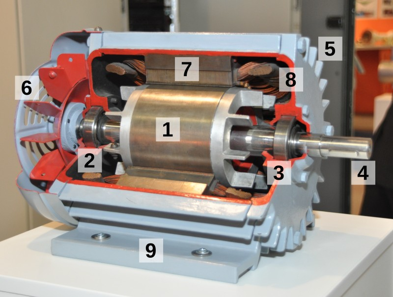
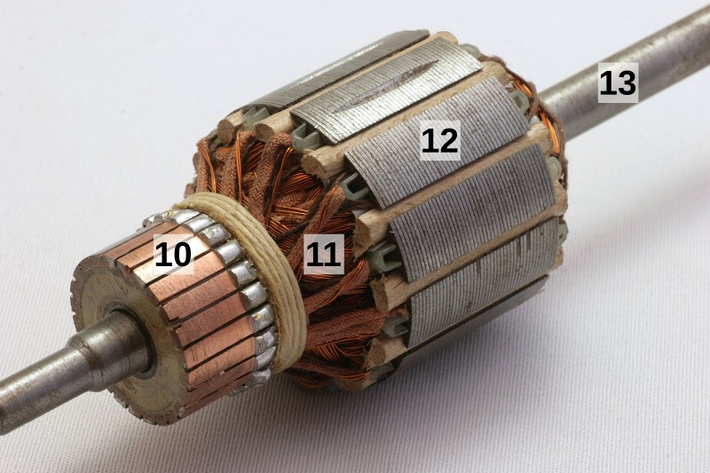

1. El motor elèctric¶
Un motor elèctric és una màquina ** ** que transforma l’electricitat en energia de rotació mecànica. Els motors elèctrics s’utilitzen àmpliament per produir moviments en joguines, electrodomèstics, vehicles de transport, eines elèctriques, màquines industrials, bombes d’aigua, etc.
El motor elèctric també es pot comportar com a generador d’energia elèctrica quan es veu obligat a girar -se. Aquest generador d’electricitat és molt més barat i durador que les bateries electroquímiques.
{kind=link}
: Descarregueu: `El motor elèctric. PDF <Electric/Electric-Motor.PDF> Format de components
: Descarregueu: El motor elèctric. Format editable Doc <Electric/Components-Motor/Electric-Motor.Doc> `
Història del motor elèctric¶
A la dècada de ** 1820 ** H. C. Ørsted i Michael Faraday van descobrir els principis bàsics de l'electromagnetisme, necessaris per construir motors.
Entre ** 1834 ** i ** 1838 ** El primer motor elèctric pràctic es desenvolupa, que va servir per impulsar un vaixell per a dotze persones a Sant Petersburg.
A ** 1866 ** Werner von Siemens va patentar la dinamo iniciant la producció d'electricitat de manera industrial, amb corrent directe.
Des de ** 1880 ** van començar a construir xarxes i centrals elèctriques de corrent directe en molts països, inclosa Espanya.
A ** 1888 ** Nikola Tesla va fabricar el primer motor de corrent altern. Aquesta forma de corrent és la que va acabar utilitzant -se a les xarxes de distribució elèctrica gràcies als seus avantatges sobre el corrent directe i gràcies a les patents assignades lliures de Tesla a Westinhouse.
Història de l'electrificació d'Espanya¶
A Espanya, la primera empresa que va produir i comercialitzar electricitat (Spanish Electricity Society) es va crear el 1881 a Barcelona. Tot i això, no va ser fins molts anys després quan l’electricitat va arribar massivament a totes les cases.
| Any | Energia generada | Cases amb electricitat |
|---|---|---|
| 1940 | 2 Twh | 30% |
| 1950 | 5 Twh | 45% |
| 1960 | 12 Twh | 65% |
| 1970 | 20 Twh | 85% |
| 1980 | 50 Twh | 95% |
| 1990 | 90 Twh | 100% |
Classificació del motor¶
- Motors d’escombra d’orella
- Motors de corrent continu
- Motors actuals alternatius universals
- Alternant motors d'inducció de corrent amb rotor enrotllat
- Motors sense pinzells
- Motors síncrons d’inducció
- Motors sense escombrat d’imants permanents
- Motors de reticència (motors de pas -Per)
** Motors lineals **
Peces del motor¶
Un motor elèctric està format per dos grans blocs. L’estator, que es manté fix, i el rotor, que gira quan el motor està en funcionament.
{kind=link}

Parts d’un motor d’inducció de corrent altern per observar el seu interior.¶
- Rotor de gàbia d'esquirol (induït).
- i 3. Els coixinets que subjecten l’eix del rotor.
- Eix rotatiu que transporta energia mecànica.
- Habitatge amb aletes de refrigeració.
- Ventilador amb fulles que refreda la carcassa.
- Estator que genera un camp magnètic giratori.
- Bobines d’estator alimentades amb corrent altern.
- Ester de fixació del peu per arreglar el motor.
{kind=link}

Rotor d’un motor de corrent directe.¶
- Col·leccionista amb connexió fina.
- Enrotllament de fil de coure (bobines del rotor).
- Pals magnètics del rotor.
- Eix de gir del rotor.
Funcionament del motor elèctric¶
El funcionament del motor elèctric es basa en la força exercida per un camp magnètic sobre un corrent elèctric (força de Lorentz).
{kind=link}
Els motors de corrent continu tenen bobinatges amb molts cables de coure aïllats (11) a través dels quals el corrent passa del col·leccionista de Delgas (10). El camp magnètic de l’estator està fixat, produït per imants permanents o per un electromagnet. El camp magnètic genera una força en el corrent que circula pels fils de coure que tendeix a girar el rotor. Si invertim el sentit del corrent, la força també canvia de sentit i el motor es convertirà en el sentit contrari.
Quan el rotor gira, el col·leccionista de Delgas també gira i alimenta nous cables de rotor amb corrent. D’aquesta manera, sempre s’alimenten cables horitzontals que produeixen força de gir.
Explicació del motor de corrent directe o de corrent directe (CD).
- Vídeo: "Com funciona un motor elèctric? Motor de CD explicat. <https://www.youtube-nocokie.com/embed/a_vgprxfzxq>`__
Als motors d'inducció ** ** Els cables del rotor es substitueixen per barres conductives. El camp magnètic de l'estator gira i s'arrossega amb ell al seu torn cap a les barres del rotor.
Fabricació d’un motor elèctric¶
Experimenteu per construir un petit motor elèctric de corrent directe.
- Vídeo: Experiment: motor elèctric.
La unitat de freqüència¶
Un variador de freqüència és un dispositiu electrònic que controla la tensió i el corrent d’alimentació del motor.
El corrent d’alimentació del motor és proporcional a la força de rotació (parell del motor). La tensió d’alimentació i la seva freqüència són proporcionals a la velocitat de rotació del motor. Controlar el corrent i la tensió es controla precisament el funcionament del motor.
Una aplicació del variador de freqüència és moure suaument els motors del vehicle de manera que tinguin una acceleració constant. També poden controlar la velocitat dels mitjans de transport. Quan la unitat funciona produeix un brunzit audible que és característic dels motors de tren i dels cotxes elèctrics.
Exercicis¶
- Per a què serveix un motor elèctric i per a què serveix?
- Què és un generador elèctric i quina relació amb els motors?
- Dibuixa una línia de temps en què apareixen les fites principals de la història del motor elèctric.
- Dibuixa un gràfic en la història de l’electrificació a Espanya. Una línia amb la potència instal·lada hauria d’aparèixer amb els valors de l’eix vertical esquerre a la 15a –cuts i una altra línia amb el percentatge d’habitatges amb electricitat amb els valors de l’eix vertical dret en un 10%de seccions.
- Aproximadament en quin any, el 60% de les llars a Espanya havien instal·lat electricitat?
- Nom 5 diferents tipus de motors elèctrics.
- Dibuixa un motor d’inducció i nomena les seves parts principals.
- Dibuixeu el rotor d’un motor de corrent directe i nomeneu les seves parts principals.
- Expliqueu el funcionament d’un motor de corrent directe.
- Què és una unitat de freqüència per al motor? Escriviu un exemple d’aplicació.
- Com es pot controlar la velocitat de rotació d’un motor? I la teva parella?